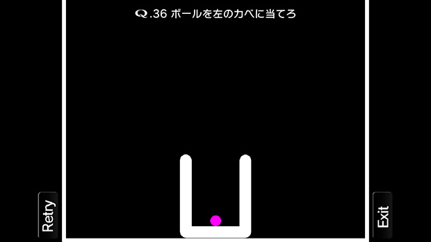
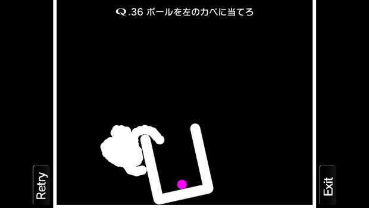
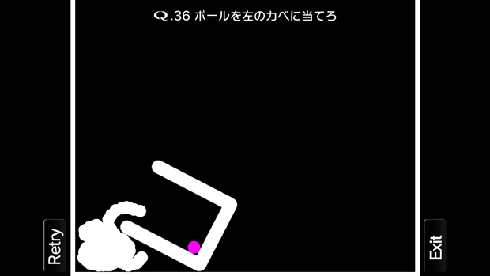
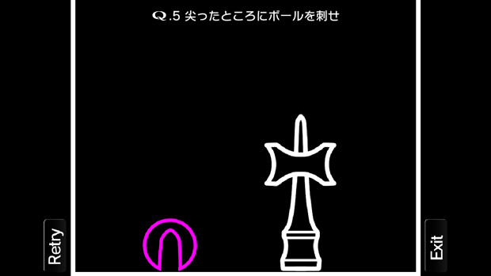

これはなかなか秀逸
スマホアプリというものにほとんど興味の無かった私が、最近とてもハマってしまったものがあります。
それが「Ｑ」というアプリ。
ごく日常の感覚で理解できる物理法則を駆使して、お題をクリアするというものです。
画面にタッチすると、「球」「棒」「三角形」など自分が指で描いた図形をそのまま出現させることが出来ます。
指を離すとその物体は物理法則に従って動きます。
例えば棒を床に立てると、左右どちらかの方向に倒れていきます。
三角形の坂道を作ってその上に球を置けば、球は坂を転がっていきます。
こんな風に画面にいろいろな物を出現させてお題をクリアするわけです。
画面を見てもらった方が早いですね。

これは無料でダウンロード出来るステージの中盤あたりのお題です。
なんだぁ、かなりシンプルだし全然面白くないんじゃない？
そんな感想を持った人に言いたい。
これ、超オモシロイです！
例えば上記のお題では、まず赤いボールをコップから出さなければなりません。
そこで、下の図のようにコップの左ふちにおもりを引っかけてみます。
さあコップが傾きました。


あ…コップが真横にならない（涙）。
しかも完全にコップが倒れたとしても、自分で作ったおもりが邪魔でボールを左の壁に触れさせることが出来なさそう…。
そんな失敗を幾度となく繰り返しながら、何度も工夫して挑戦するのです。
実際にやってみればわかりますが、シンプルな設定とは裏腹に、冒険心とチャレンジ精神をかきたてる非常に秀逸なアプリなのです。
ちなみに下の写真は課金して得られる特別ステージ。

「課金してまでやる価値のあるアプリなんて無い」と思っていた私が、特別ステージをやりたくて、課金しちゃいましたよ（苦笑）。
いろんな力が鍛えられる
私は単に楽しいというだけでこのブログで「Ｑ」を紹介したのではありません。
このゲームと勉強には、以下に挙げるいくつかの共通要素が垣間見られたからです。
（※ただし中毒性が高めなので注意が必要ですが…）
その１：物理法則を遊びながら理解できる
例えばシーソーを作って球を飛ばしたりすること一つをとっても「てこの原理」を体感的に理解できます。球の大きさや棒の形状などを変えることで新たな発見もあります。
その２：試行錯誤の訓練になる
適度な難易度のステージでは、何度も挑戦したくなります。その過程で「ああやってみよう」とか「これで試してみよう」など、とりあえず手を動かして糸口を見つける過程は、特に理数系の問いに取り組む上で大切な要素です。
その３：逆転の発想にたどり着く経験ができる
「どうやってもダメだ…詰んだ」そんな暗闇の中でふと降りてくるもの、それが逆転の発想。追い込まれたときにたどり着く境地です。ふと今までとらわれていたやり方を捨て去り、まったく違った方向性を探ってみるというのは、学問を志す者にといて一番大切と言ってよいことではないでしょうか。
その４：答えは無限にある
各ステージで課されるお題を攻略する方法は、基本的に一つではありません。まさに実社会で直面する「正解の用意されていない様々な問題」と同様なのです。家族や友人と一緒に同じステージに取り組んで、より秀逸な方法を競い合うのもまた一興です。自分のやり方よりイケてる方法で攻略した友人にジェラシーを感じつつ、「その発想はなかった！」という一言をつぶやくのもまた幸せなことかもしれません。
ということで、このアプリ五つ星！
★★★★★